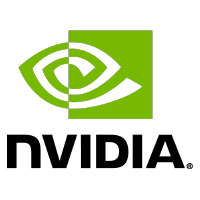

Reference frame
Grab roller
First recorded simulator frame.

Seeing is not following.
Do robotic world models really follow actions?
Diagnosing and aligning action-conditioned generation for policy learning.
arXiv:2608.24885 · August 2026
 1 State Key Laboratory of Multimedia Information Processing, School of Computer Science, Peking University
1 State Key Laboratory of Multimedia Information Processing, School of Computer Science, Peking University
 2 Beijing Innovation Center of Humanoid Robotics
2 Beijing Innovation Center of Humanoid Robotics
 3 New York University
3 New York University
 4 University of Electronic Science and Technology of China
4 University of Electronic Science and Technology of China
 5 Nanyang Technological University
5 Nanyang Technological University
 6 The Chinese University of Hong Kong
6 The Chinese University of Hong Kong
Action-conditioned world models are increasingly used as learned simulators for policy evaluation and improvement, yet their effectiveness rests on an unverified assumption: generated futures faithfully reflect arbitrary valid actions. Existing benchmarks are typically confined to expert demonstrations, leaving off-expert action following inadequately evaluated. To address this gap, we introduce WorldEcho, which probes action following over a broader action distribution using visual integrity and SE(3) trajectory alignment. Our diagnosis shows that current world models reasonably execute expert actions but struggle with diverse off-expert trajectories, either ignoring the commanded actions or producing visually invalid rollouts. We further propose WorldSync, which strengthens action following along three complementary axes: distributional coverage, representational grounding, and intervention-effect alignment. It broadens the training distribution over action consequences, grounds intermediate video representations in action-induced robot dynamics through an Action-Forcing Expert, and aligns predicted changes under action interventions with the corresponding changes in ground-truth futures. Experiments on RoboTwin benchmarks and real-robot tasks show that WorldSync improves WorldEcho metrics and serves as a more reliable simulator for iterative policy improvement, enabling policies to achieve higher success rates.
Part I / The action-following problem
An action-conditioned world model should follow the commanded motion. Compare the simulator with two observed failure modes: visual collapse, where robot geometry breaks down, and action mismatch, where a plausible video moves the wrong way.
Grab roller
First recorded simulator frame.
Scroll horizontally to compare all three videos.
The simulator reference for the recorded action query.
Robot geometry breaks, blurs, or disappears under the query.
The video looks plausible, but its end-effector motion disagrees.
Input shows the first recorded simulator frame; the clips do not include numerical action inputs. Model outputs 1 and 2 identify the two examples, not separate model identities.
To quantify these failures, we introduce WorldEcho, a benchmark for action following beyond expert replay. It checks both whether a generated future is visually valid and whether the robot motion agrees with the consequences of the commanded actions.
Its five query types span demonstrated actions, cross-state replay, local perturbations, policy rollouts, and feasible-space sampling. For each query, WorldEcho compares model and simulator futures from the same initial state and action sequence, jointly assessing visual integrity and SE(3) end-effector alignment.
Figure 3 · WorldEcho benchmarkVisual integrity gate
Quality, temporal smoothness, end-effector visibility, and arm integrity must all pass.
Trajectory alignment
AnyPos recovers both end-effector trajectories; pose-aware NDTW compares them in SE(3).
Integrity-gated score
Valid rollouts use trajectory error; visually invalid rollouts receive a fixed penalty.
Guided by the WorldEcho diagnosis, WorldSync trains the world model to improve action following through expanded action coverage, auxiliary Action-Forcing Expert supervision, and intervention-effect alignment.
Coverage
Mix diverse simulated expert and off-expert trajectories with target-domain real expert data in a shared relative Cartesian action space.
Grounding
Decode future end-effector trajectories from intermediate video features so the representation encodes action-induced robot dynamics.
Sensitivity
Pair the same observation with different actions and match the change in predicted futures to the change in ground-truth futures.
WorldEcho / Leaderboard
Compare action following and visual integrity across 50 RoboTwin tasks. Ranked by integrity-gated error, with raw trajectory error and visual pass rate alongside.
50 tasks 7 models
Protocol & results ↗Scroll horizontally to compare all metrics.
| Rank | Model | Training data | Gated error ↓ | Raw NDTW ↓ | Visual pass (%) ↑ |
|---|---|---|---|---|---|
| Rank 1 | Expanded60k updates | 0.0661 | 0.0223 | 84.51 | |
| Rank 2 | Expert20k updates | 0.0716 | 0.0266 | 83.89 | |
| Rank 3 |  DreamDojo |
Expert20k updates | 0.0805 | 0.0210 | 78.97 |
| Rank 4 | Cosmos-Predict2.5 | Expert20k updates | 0.0894 | 0.0190 | 75.09 |
| Rank 5 | Expert20k updates | 0.1116 | 0.0548 | 75.09 | |
| Rank 6 | LingBotVA | Expert20k updates | 0.1148 | 0.0473 | 71.83 |
| Rank 7 | Cosmos3 | Expert20k updates | 0.1432 | 0.0572 | 63.94 |
Each logo identifies the lead institution or model developer. Model links open the full project credits.
Published task-macro averages over 50 RoboTwin tasks. Baselines use expert demonstrations (20k updates); WorldSync uses expanded action coverage (60k updates). Training data and budgets differ. Expanded baseline results remain in the full paper.
WorldSync / Interactive preview
Choose a scene and draft commands for either arm. Explore the controls here before live world-model inference is connected.

A frame from the existing experiment recording.
A live model will generate a rollout from your action sequence here.
No inference is running in this preview.
No commands yet. Choose an arm and use the controls to start.
Drafted change UI axes
Focus these controls to use the keys. Each press adds one command. X / Y / Z are preview axes; no robot motion is executed.
Ready to draft. No model is connected.
Part IV / State control in action
Single-task rollouts from WorldSync trained on 50 tasks. This gallery will compare its response to a given action sequence with a baseline and the reference rollout.
Reference rollout
Video pendingBaseline rollout
Video pending50-task checkpoint
Inference video pendingComparison videos are being prepared. Each case will use the same initial observation and action sequence, with the task and model checkpoint identified alongside the recordings.